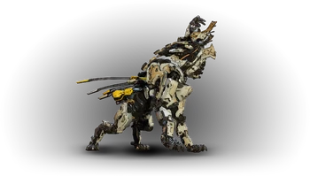
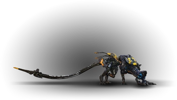
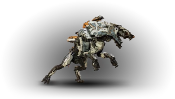
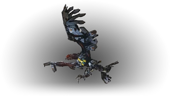

Machine De combat
Le Dents de Scie

Une machine agressive capable de couvrir rapidement la distance qui la sépare de sa cible afin d’utiliser ses attaques de combat rapproché
Composants :
- Corps : Faible face au feu, aucune résistance
- Bonbonne à flambée : Faible face au feu et à la déchirure, aucune résistance
Butin :
- Éclat de métal
- Flambée
- Bluette
- Fil électrique
- Noyau de machine – moyen
- Tresse lumineuse
- Lentille de Dents de Scie
- Cœur de Dents de Scie
Piratage : SIGMA
Conseils : L’idéal contre un Dents de Scie est d’employer des attaques de feu combinées à des pièges. Sa bonbonne étant située sous
son ventre, l’immobiliser pourra aider grandement à atteindre son point faible. De même, son piratage étant accessible après le premier
creuset, n’hésitez pas à en abuser.
Le Traqueur

Ce prédateur sournois dispose de capacités de camouflage, de mines explosives et d’une attaque à distance puissante
Composants :
- Corps : Faible face à l’électricité, aucune résistance
- Pistolet à fléchettes : Faible face à la déchirure, aucune résistance
- Lance-mines : Faible face à la déchirure, aucune résistance
- Générateur de furtivité : Faible face à la déchirure, aucune résistance
Butin :
- Éclat de métal
- Coque d’écho
- Réceptacle métallique
- Bluette
- Fil électrique
- Noyau de machine – moyen
- Tresse lumineuse
- Lentille de Traqueur
- Cœur de Traqueur
Piratage : XI
Conseils : Restez sur vos gardes quand vous approchez d’un site de Traqueurs, leur comportement est particulièrement évolué et
risque de vous donner beaucoup de fil à retordre. Cette machine se déplaçant la plupart du temps de manière furtive la seule
façon de la repérer est de le faire à l’œil nu, votre focus étant totalement inefficace dans ce cas de figure. Vous pourrez
remarquer une altération de votre champ de vision à l’endroit où il se trouve. Autre élément à prendre en compte est sa faculté
à poser des mines autour de lui. Elles sont repérables par leur lumière rouge, et, à votre approche alerteront le Traqueur en plus
de vous occasionner quelques dégâts. N’ayant que peu de vie, une approche et une attaque discrètes seront très efficaces tout comme
l’usage de flèches électriques.
Le Ravageur

Cette machine de combat rapide comme l’éclair en combat rapproché est équipée d’un canon pour attaquer à distance
Composants :
- Corps : Faible face au feu, résistant à l’électricité
- Bonbonne à gel : Faible face au gel, aucune résistance
- Batterie : Faible face à l’électricité et à la déchirure, aucune résistance
- Canon de Ravageur : Faible face à la déchirure, aucune résistance
Butin :
- Éclat de métal
- Givrelymphe
- Bluette
- Fil électrique
- Noyau de machine – moyen
- Tresse lumineuse
- Lentille de Ravageur
- Cœur de Ravageur
Piratage : RHO
Conseils : Sorte de version améliorée du Dents de Scie, le Ravageur embarque un canon sur son dos et est capable d’attaques électriques.
Mais dites-vous qu’il a également plus de points faibles ! Le chemin le plus rapide pour l’abattre est de détacher l’arme sur son dos et
de s’en servir pour l’abattre. La présence de ce canon très puissant pourra également en faire un compagnon de choix si vous le piratez,
et vous ferez plus forte impression que lorsque vous promenez kiki !
Le Oiseau-tempête

Cette machine volante très agile bénéficie d'un large arsenal d'attaques électriques air-sol.
Composants :
- Corps : Aucune faiblesse, résistant à l’électricité
- Bonbonne à flambée : Faible face au feu et à la déchirure, aucune résistance
- Moteur : Faible face à la déchirure, aucune résistance
- Bonbonne à gel : Faible face au gel et à la déchirure, aucune résistance
Butin :
- Éclat de métal
- Flambée
- Givrelymphe
- Coque d’écho
- Tresse de cristal
- Noyau de machine – gros
- Lentille d'Oiseau-tempête
- Cœur d'Oiseau-tempête
Piratage : ZETA
Conseils : Détruire le pistolet à foudre, détruire les moteurs et viser les bonbonnes de Flambée avec des
flèches de Feu ou les bonbonnes de Givrelymphe avec des flèches de gel.
Le Gueule-d'orage

Cette machine de combat de pointe dispose d'artillerie lourde et d'attaques de combat rapproché.
Composants :
- Corps : Aucune faiblesse, résistant à l’électricité
- Bonbonne à flambée : Faible face au feu et à la déchirure, aucune résistance
- Nexus de données : Faible face à tout type d’attaque, aucune résistance
- Lance-disques : Faible face à la déchirure, aucune résistance
- Bonbonne à gel : Faible face à la déchirure et au gel, aucune résistance
- Cœur : Faible face à tout type d’attaque, aucune résistance
- Batterie : Faible face à la déchirure et à l’électricité, aucune résistance
- Radar : Faible face à la déchirure, aucune résistance
- Canon : Faible face à la déchirure, aucune résistance
- Queue : Faible face à la déchirure, aucune résistance
Butin :
- Éclat de métal
- Flambée
- Givrelymphe
- Bluette
- Coque d’écho
- Fil électrique
- Tresse de cristal
- Noyau de machine – gros
- Lentille de Gueule-d’orage
- Cœur de Gueule-d’orage
Piratage : ZETA
Conseils : Le Gueule-d'orage possède plusieurs armes. Il peut émettre plusieurs types d'émissions énergétiques
depuis sa tête, comme des rayons laser rouges ou des canons qui émettent des tirs bleus de matière inconnue. Sur
son dos, juste au-dessus de ses jambes, se trouve un Lance-Disques qui peut être détaché en tirant dessus et
retourné contre lui. De plus, le Gueule-d'orage peut écraser ses ennemis ou les balayer d'un coup de queue.